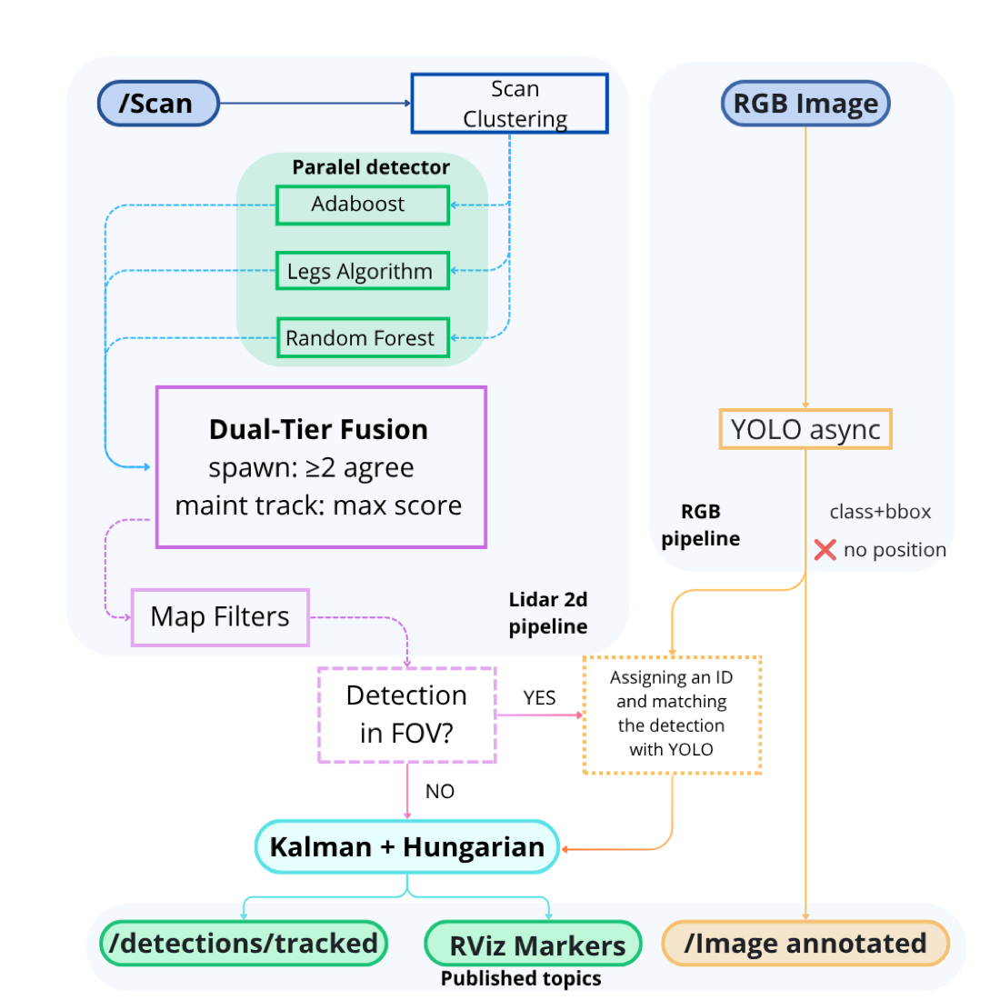
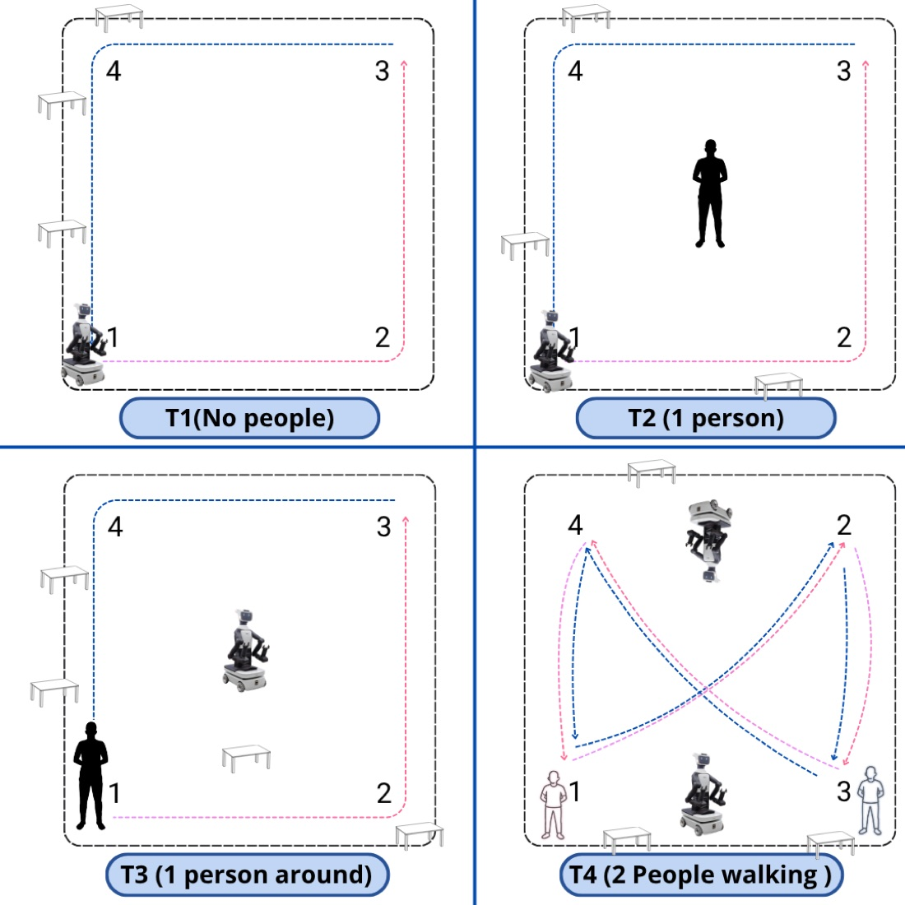
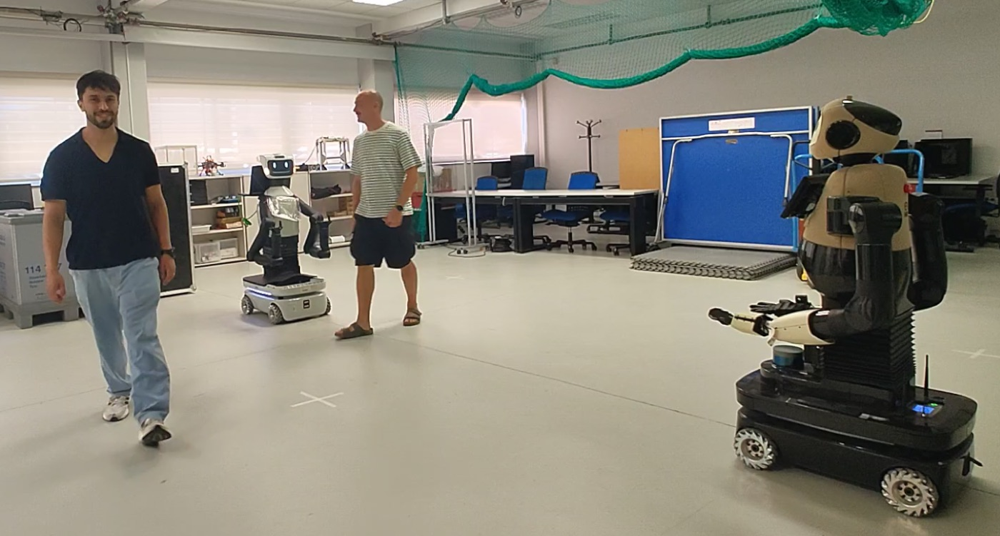
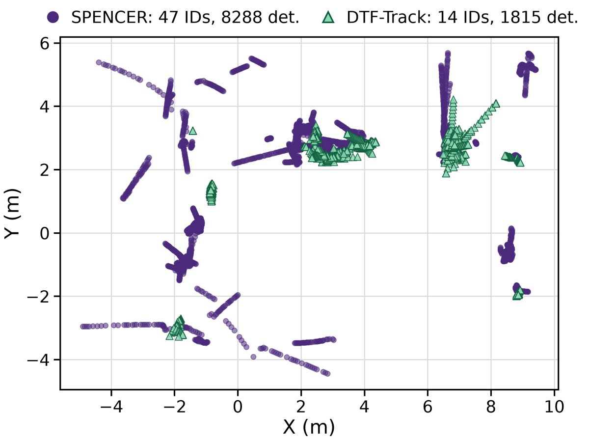
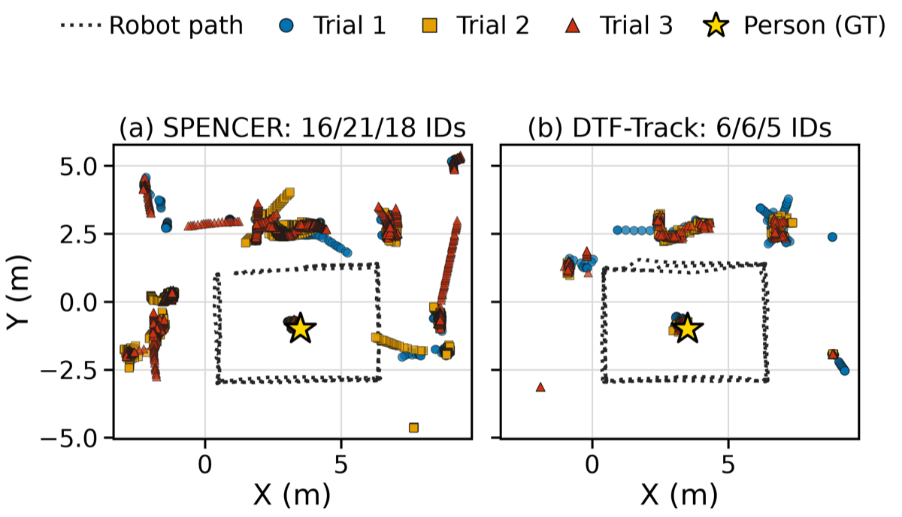
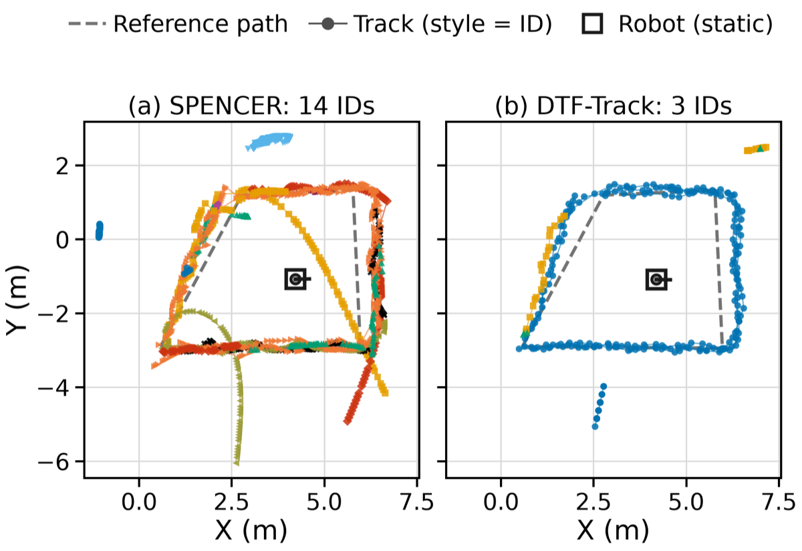
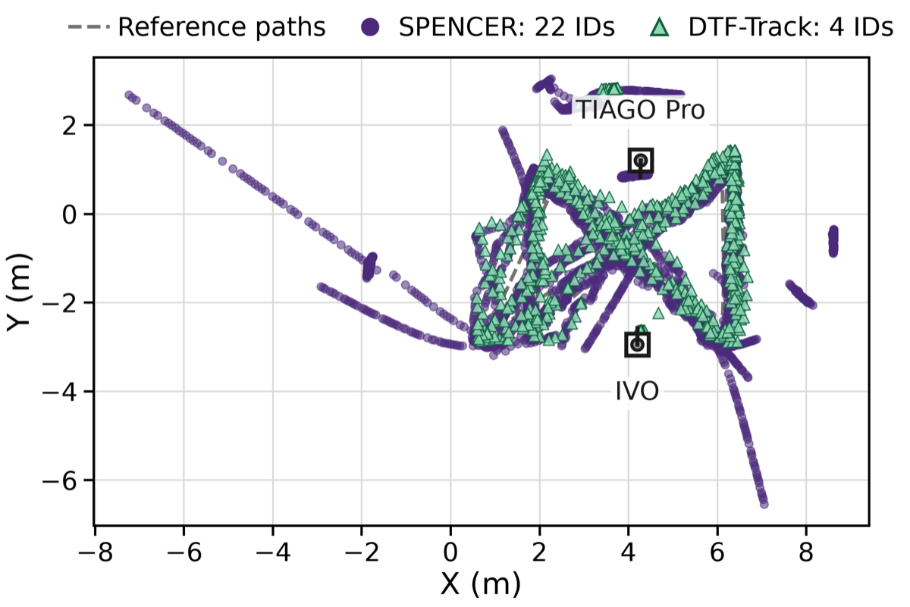

DTF-Track: Dual-Tier Fusion for People Tracking
Abstract
Mobile service robots operating among humans need reliable 2D LiDAR-based people detection and tracking in the presence of ego-motion, clutter, and brief occlusions when 3D sensing is unavailable. SPENCER established a widely used ROS 1 pipeline that combines learned laser classifiers, multimodal detection, and a nearest-neighbor tracker, but its distributed nodelet graph is difficult to maintain on modern ROS 2 platforms.
We present DTF-Track, a unified ROS 2 node that preserves SPENCER's interpretable laser feature models while replacing its union-based detector fusion with consensus-based multi-detector validation, introducing dual-tier spawn/maintenance policies, LiDAR-first Kalman tracking with decoupled YOLO semantic confirmation, and temporally coherent scan-to-map projection. Four scenarios using TIAGO Pro (DTF-Track) and IVO (SPENCER) support both hypotheses in a cross-platform comparison.
Method

- Dual-tier multi-detector fusion. Three laser classifiers (AdaBoost, legs algorithm, random forest) run in parallel. A new track is spawned only when at least two detectors agree; an existing track is maintained with the maximum score, to keep recall.
- LiDAR-first tracking. Position and Kalman updates come only from the laser. YOLO runs asynchronously and only confirms the class and visualisation metadata. It never moves a track.
- Temporally coherent scan-to-map projection, which reduces drift while the robot rotates.
- Open-source ROS 2 implementation in a single node, easy to deploy on modern platforms.
Experimental setup
We test two hypotheses: H1, multi-detector consensus at track initiation reduces false positives; and H2, an occlusion-aware tracking lifecycle mitigates multi-person identity fragmentation. DTF-Track runs on TIAGO Pro and the SPENCER baseline on IVO, across four scenarios with three trials each.


Results
Mean excess identities per time instant (ΔN), as mean ± std over n = 3 trials per robot. Lower is better.
| Scenario | Actors | SPENCER ΔN | DTF-Track ΔN | Reduction |
|---|---|---|---|---|
| T1 | 0 | 4.07 ± 0.86 | 2.31 ± 0.30 | 43% |
| T2 | 1 | 4.48 ± 0.94 | 2.39 ± 0.37 | 47%* |
| T3 | 1 | 3.47 ± 0.26 | 0.99 ± 0.15 | 72%* |
| T4 | 2 | 4.88 ± 1.17 | 1.85 ± 0.09 | 62%* |
* p < 0.05, Welch's t-test. Across the four scenarios, mean ΔN drops from 4.23 to 1.89 (≈55% fewer).
CLEAR-MOT metrics in T2 (mean ± std, n = 3, 0.8 m threshold). All values in %, except MOTP [m].
| Method | MOTA | MOTP | IDF1 | Precision | Recall |
|---|---|---|---|---|---|
| SPENCER | −374 ± 56 | 0.31 ± 0.03 | 26.2 ± 4.6 | 15.5 ± 2.4 | 85.8 ± 24.6 |
| DTF-Track | −139 ± 37* | 0.30 ± 0.06 | 45.8 ± 3.8* | 29.8 ± 3.2* | 100 ± 0 |




Citation
If you use DTF-Track (code, models or results) in your research, please cite our paper:
@inproceedings{bejarano2026dtftrack,
title = {{DTF-Track}: Dual-Tier Fusion for People Tracking},
author = {Bejarano, Edison and Bo, Valerio and Garrell, Ana{\'i}s and Sanfeliu, Alberto},
booktitle = {ROBOT 2026: Iberian Robotics Conference},
year = {2026},
note = {Code: https://github.com/EjbejaranosAI/DTF-Track}
}
Acknowledgements
This work was supported by JST Moonshot R&D grant number JPMJMS2011 and the European project TORNADO (HORIZON-CL4-2024-DIGITAL-EMERGING-01-101189557).